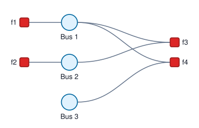

PMU-Based State Estimation
This example builds a PMU-based state estimation problem in rectangular coordinates. Each bus voltage is represented by its real and imaginary components, and each branch has susceptance 10 per-unit. The measured voltage and current phasors are modeled as Gaussian factors.
Variable Nodes
The state variables are bus voltage phasors in rectangular coordinates. Each bus voltage stores its real and imaginary components, so each bus is modeled as a two-dimensional variable:
using FactorGraph
variables = [
GaussianVariable(:V₁, 2; label = "Bus 1"),
GaussianVariable(:V₂, 2; label = "Bus 2"),
GaussianVariable(:V₃, 2; label = "Bus 3")
]Voltage Factor Nodes
A PMU voltage measurement is a unary vector-valued factor. For example, a voltage phasor measurement at bus 1 is represented by a factor connected only to bus 1. The factor mean stores the measured real and imaginary voltage components, and the identity coefficient matrix maps the variable directly to that measurement:
V1 = GaussianFactor(:V₁, [1.02, 0.00], [1.0 0.0; 0.0 1.0], [1e-4, 1e-4])We also include a voltage measurement at bus 2:
V2 = GaussianFactor(:V₂, [1.01, -0.04], [1.0 0.0; 0.0 1.0], [1e-4, 1e-4])Current Factor Nodes
For a current phasor measurement, the factor connects the voltage variables at the two branch endpoints. The factor mean stores the measured real and imaginary current components. The coefficient matrix stores the linear relation between endpoint voltages and branch current. Here each branch has susceptance 10 per-unit.
The current measurement on branch 1-2:
I12 = GaussianFactor(:V₁, :V₂, [0.4, -0.1], [0 10.0 0 -10.0; -10.0 0 10.0 0], [4e-4, 4e-4])The current measurement on branch 3-1 closes the cycle:
I31 = GaussianFactor(:V₃, :V₁, [0.2, 0.1], [0 10.0 0 -10.0; -10.0 0 10.0 0], [4e-4, 4e-4])Factor Graph Construction
Collect the factors and build the factor graph:
factors = [V1, V2, I12, I31]
graph = factorGraph(variables, factors)The graph can be rendered as an SVG factor graph figure:
saveGraphFigure("pmuse.svg", graph)
Running Belief Propagation
Run Gaussian belief propagation on the graph:
inference = canonical(graph)
gbp!(graph, inference; iterations = 30)And print results:
printMarginal(graph, inference)Variable marginals (canonical form):
Marginal for variable node "Bus 1":
mean = [1.0199999999485108, -1.0196434267203721e-12]
covariance = [5.0980392154263784e-5 0.0]
[0.0 5.0980392154263784e-5]
information = [20007.69230770231, -2.0000697986688465e-8]
precision = [19615.384616384603 0.0]
[0.0 19615.384616384603]
Marginal for variable node "Bus 2":
mean = [1.0099999999504905, -0.04000000000098046]
covariance = [5.0980392154459835e-5 0.0]
[0.0 5.0980392154459835e-5]
information = [19811.53846150111, -784.6153846715988]
precision = [19615.384616309166 0.0]
[0.0 19615.384616309166]
Marginal for variable node "Bus 3":
mean = [1.0100000000000002, 0.020000000000000046]
covariance = [5.498039215686275e-5 0.0]
[0.0 5.498039215686275e-5]
information = [18370.18544935806, 363.7660485021406]
precision = [18188.302425106987 0.0]
[0.0 18188.302425106987]Validation
Compare the loopy Gaussian belief propagation result with the centralized weighted least-squares solution:
reference = solveWLS(graph)
maxMeanError(graph, inference, reference)5.149579811310196e-11